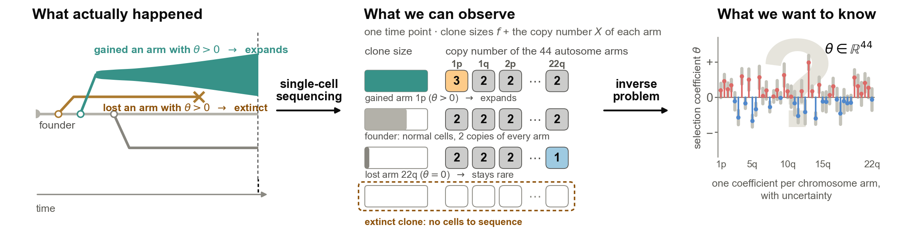
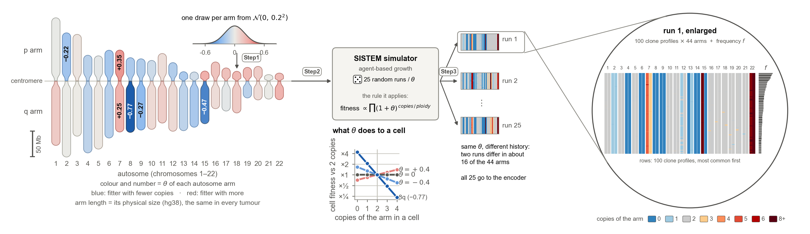
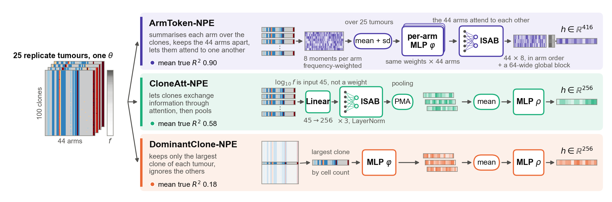
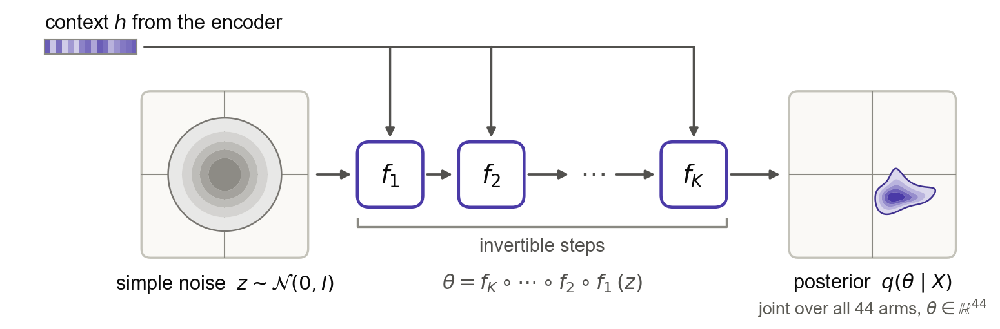
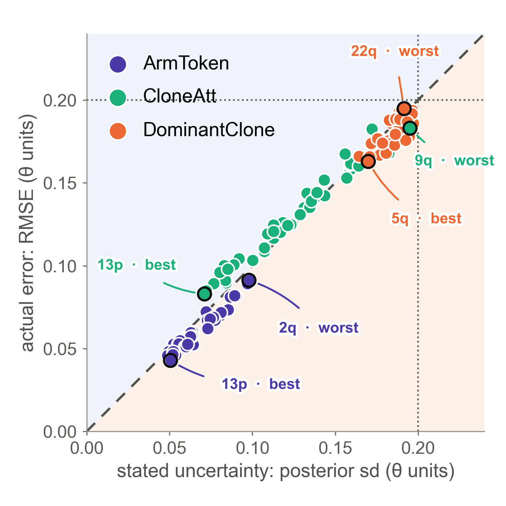
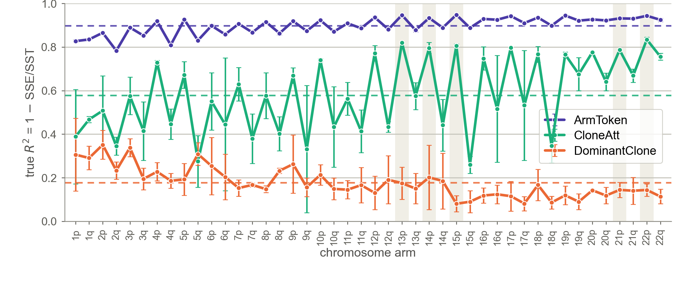
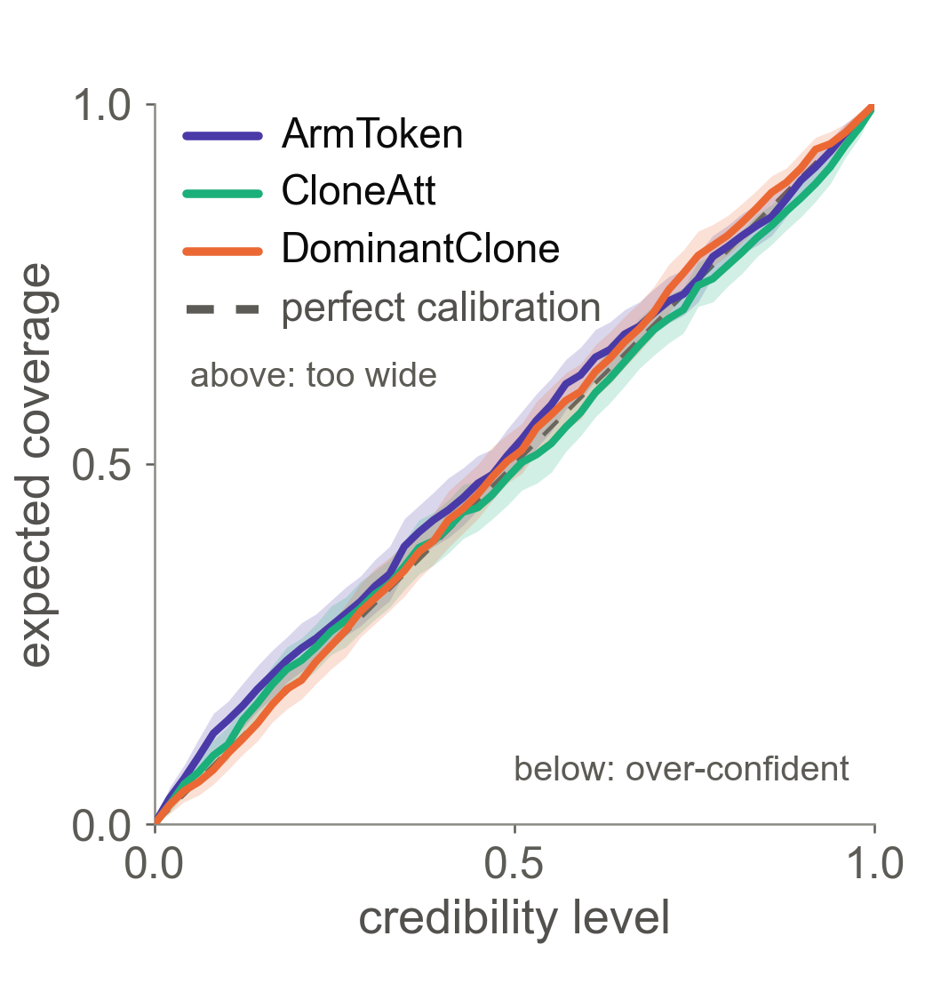

Poster draftclick text to edit it · Layout lets you drag, resize and re-scale any block · yellow [check] = verify before printing
UCONNUNIVERSITY OF CONNECTICUT
Reconstructing Intra-Tumor Fitness Landscapes from scSeq CNA Genotypes via Simulation-Based Bayesian Inference and Deep Learning
Maryam KafiKang, Mukul S. Bansal, Pavel Skums
UConn School of Computing
Background
Clone fitness has so far been measured by watching a tumour evolve: repeated single-cell sequencing of cell lines and xenografts, then time-series modelling (fitClone, Salehi et al. 2021). A patient, by contrast, is usually sequenced once: a single snapshot of the tumour, not a time series.
Question
From one clonal copy-number snapshot, can we recover the selection coefficient of every chromosome arm, θ ∈ ℝ44, with its uncertainty? There is no likelihood — tumour evolution exists only as a simulator — and extinct clones are unseen.
Why arm-level θ?
A cell's fitness — its odds of dividing rather than dying — is set by its copy numbers:
fitness = ∏arms (1 + θarm)copies / ploidy
θarm is the weight of one extra copy of that arm: θ > 0 favours gains, θ < 0 favours losses. Fitness is a property of one clone; θ is a property of the arm, so it
scores any clone from its copy numbers — including clones not yet seen;
predicts the future of the tumour: which clone takes over, what a therapy leaves behind;
ranks the arms that drive this cancer — the fitness landscape, comparable across patients;
comes with uncertainty: the posterior says which arms are established and which are guesses.
What actually happened, what one biopsy shows, and what we want to know

This work
simulate thousands of tumours with known θ
train a neural posterior on them
read θ and its uncertainty from a single snapshot
Data: simulated tumours
Step1: draw one θ per autosome arm → Step2: SISTEM grows tumours under it → Step3: 25 replicate tumours; the 100 most common clone profiles of each tumour and their frequencies f are what the model sees

Data
Simulated: 2,500 simulator parameter settings × 25 independent replicates = 62,500 tumours; split 80 % / 20 % by parameter setting into training and test sets.
Selection: at the chromosome-arm level, as in SISTEM's arm model: one θ per arm, no fitness for genes or point mutations; focal CNAs act only via the arm's average copy number.
Representation: per clone, the arm-level copy-number ratio of the 44 autosomal arms, normalized as log2(max(x, 10−3)) − 1; cells sharing a profile form a clone, and the 100 most frequent clones are kept, each with its relative frequency → a 100 × 45 matrix X.
Methods: encoders
three ways to compress the 25 tumours into one context vector h: CloneMLP (every clone, frequency-weighted mean), CloneAtt (Set Transformer), DominantClone (largest clone only)

Methods: posterior
a neural spline flow (K = 5 invertible steps, sbi) turns noise into q(θ | X), steered by h · trained on simulations only · amortised: instant for a new tumour

Results: uncertainty vs error
one dot per arm, both axes in θ units · dashed = honest (stated sd equals real error) · dotted = prior sd 0.20

ArmToken-NPE — stated sd 0.067 · error 0.061 · ratio 0.90 · best 13p, worst 2q
CloneAtt-NPE — 0.123 · 0.128 · ratio 1.04 · best 13p, worst 9q
DominantClone-NPE — 0.187 · 0.182 · ratio 0.97 · best 5q, worst 22q: the prior handed back
ratio 1 = the model's uncertainty matches its error; above the line = over-confident (error bars too narrow), below = under-confident (too wide); nearer the origin = more learned
More information
Preprint bioRxiv 10.64898/2026.04.10.717795
Email marykafi@uconn.edu
Acknowledgments This study was partially supported by NSF grants 2415564 and 2415562.
Results: recovery per arm
per-arm true R² (1 − SSE/SST) on 651 held-out simulated tumours · dashed = each encoder's mean over the 44 arms: ArmToken-NPE 0.90 (3 seeds), CloneAtt-NPE 0.58 (2), DominantClone-NPE 0.18 (3) · error bars = sd over training seeds · shaded = acrocentric p arms

Results: calibration
joint coverage over all 44 arms (TARP) · diagonal = honest

ArmToken-NPE — SBC 21/44 arms fail (15–37 over seeds) · 95 % cov. 0.961 · TARP 0.022, slightly wide
The clone set carries the signal: the largest clone alone recovers θ with true R² 0.18; attention over all clones 0.58.
Sharing weights across arms unlocks it: ArmToken-NPE reaches 0.90 (± 0.002 over 3 seeds), ahead on 44 of 44 arms; the published model scored 0.47 with over-confident intervals.
Honest uncertainty: all three encoders sit on the TARP diagonal; ArmToken's 95 % intervals cover 96 % and are 4× narrower than the prior.
Arms differ: p arms beat q arms, and accuracy rises with chromosome number — but falls for the largest-clone baseline.
Feasible: arm-level selection can be read from a single clonal snapshot, with uncertainty, without a likelihood.
Caveats: the model was trained and tested with 25 replicate tumours per θ — a patient gives one, so it must be evaluated with a single tumour; the inputs are exact simulator copy numbers, whereas scDNA-seq samples cells and calls copy numbers with noise — simulating that step is the next thing to add.
Next: test the model on real tumours.
References
Salehi S., Kabeer F., Ceglia N. et al. Clonal fitness inferred from time-series modelling of single-cell cancer genomes. Nature 595, 585–590 (2021).
Weiner S., Bansal M. S. SISTEM: simulation of tumor evolution, metastasis, and DNA-seq data under genotype-driven selection. Bioinformatics 41(12), btaf634 (2025).
Greenberg D., Nonnenmacher M., Macke J. Automatic posterior transformation for likelihood-free inference. Proc. ICML, PMLR 97, 2404–2414 (2019).
Durkan C., Bekasov A., Murray I., Papamakarios G. Neural spline flows. Advances in Neural Information Processing Systems 32, 7511–7522 (2019).
Tejero-Cantero A., Boelts J., Deistler M. et al. sbi: a toolkit for simulation-based inference. J. Open Source Softw. 5(52), 2505 (2020).
Lee J., Lee Y., Kim J., Kosiorek A., Choi S., Teh Y. W. Set Transformer: a framework for attention-based permutation-invariant neural networks. Proc. ICML, PMLR 97, 3744–3753 (2019).
Boelts J., Deistler M., Gloeckler M. et al. sbi reloaded: a toolkit for simulation-based inference workflows. J. Open Source Softw. 10(108), 7754 (2025).